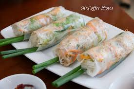

總結和心得
總結
讓我最有印象的是越南春捲餐有些像餃子之於中餐，幾乎是標誌性食品。
在越南，春捲的種類和做法十分多樣，口味更是千變萬化。
所以，吃越南菜時點一份春捲絕對是不二之選。其中一葉春捲和越南春捲都值得一試。
前者以蔬菜為主，菜色鮮嫩，清新爽口；後者則是包裹著肉餡的，據說製作時，
通過火候的變化可以去除油膩，基本保持了越南菜清淡自然的口味

心得
感謝老師這學期來的教導，雖然我都因為公司的事情常常沒聽到您的課，
可是老師總是很有耐心的一再提醒什麼功課要交，也讓我把沒學到的部分
透過同學的幫忙學到了，但還是要謝謝老師您的教導讓我多了一項技能。
首頁
第2頁
第3頁
第4頁